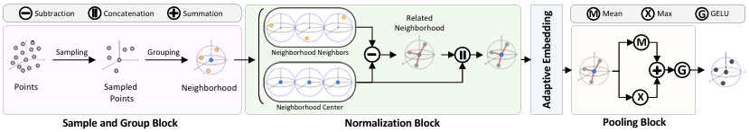

Abstract
NPNet is a fully non-parametric network for 3D point cloud analysis. It introduces an adaptive Gaussian–Fourier positional encoding where kernel width and blending weights are dynamically set from input geometry, ensuring robustness across varying scales and densities.
Remarkably, the model contains zero trainable parameters. Inference is performed purely by similarity matching to stored shape descriptors (classification) or part prototypes (segmentation). Despite this, it achieves competitive, state-of-the-art non-parametric performance on ModelNet40, ScanObjectNN, and ShapeNetPart, alongside an exceptionally low memory footprint and fast inference.
Methodology & Architecture
Overall Architecture

Adapts bandwidth σ and mixing coefficient λ from input geometry; an additional Fourier branch provides global context.
Adaptive Positional Encoding

FPS selects centroids, k-NN groups local neighborhoods, positional encoding modulates features, and pooling produces a stage descriptor.
Stage Block

NPNet architecture for classification and part segmentation. The model contains no trainable weights.
Visualizations & Analysis

Top: DGCNN attention. Middle/Bottom: activation maps from the proposed AdaptiveEmbedding module (dim 16 and 32).

Radar comparison on ModelNet40 and ShapeNetPart. GPU memory, GFLOPs, and inference time are inverted (larger = better efficiency).
Efficiency & Benchmark Results
Measured on an NVIDIA RTX 3090 (1024 points). NPNet achieves competitive accuracy with zero learned weights.
| Model | Dataset | Accuracy | Params (M) | GFLOPs | GPU Mem (MB) | Time (ms) |
|---|---|---|---|---|---|---|
| NPNet | ModelNet40 | 85.5% | 0 | 0.0021 | 99.1 | 3.86 |
| Point-NN | ModelNet40 | 81.8% | 0 | 0.0027 | 161.0 | 4.44 |
| Point-GN | ModelNet40 | 85.3% | 0 | 0.0021 | 161.0 | 5.80 |
| NPNet | ShapeNetPart | 73.6% | 0 | 0.0045 | 256.4 | 5.63 |
| Point-NN | ShapeNetPart | 70.4% | 0 | 0.0054 | 442.9 | 16.83 |
Citation
@article{saeid2026npnet,
title={NPNet: A Non-Parametric Network with Adaptive Gaussian-Fourier Positional Encoding for 3D Classification and Segmentation},
author={Saeid, Mohammad and Salarpour, Amir and MohajerAnsari, Pedram and Pes{\'e}, Mert D},
journal={arXiv preprint arXiv:2602.00542},
year={2026}
}